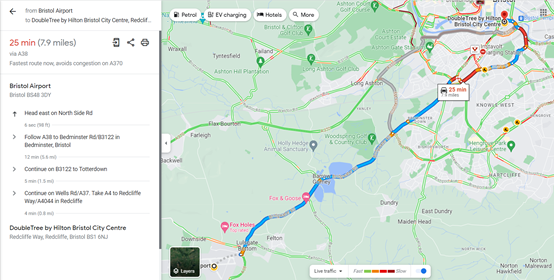
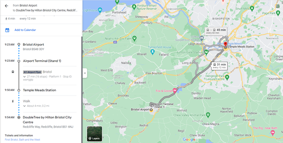
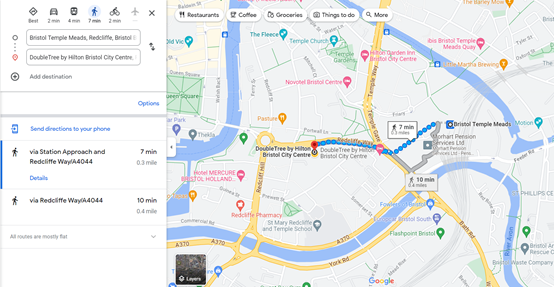
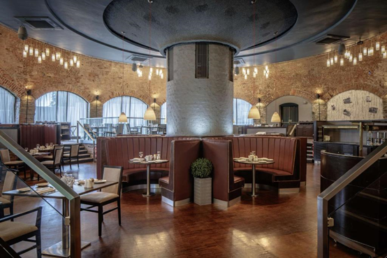
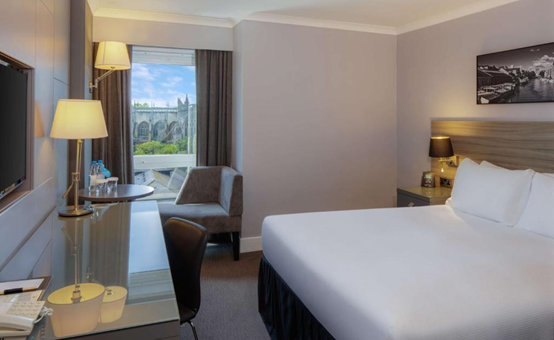
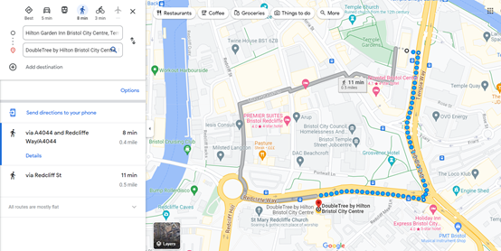
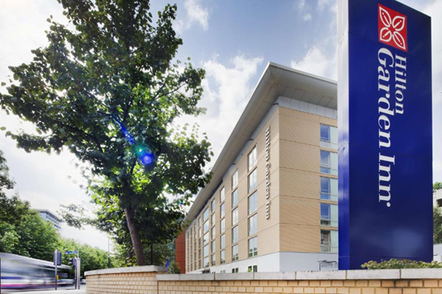

Venue and Accomodation
Venue Information:
Conference Name: ICIT 2024 (The 25th IEEE International Conference on Industrial Technology)
Date: 25-27 March, 2024
Address: DoubleTree by Hilton Bristol City Centre, Redcliffe Way, Redcliffe, Bristol, BS1 6NJ

Note: Registration Desk is near Hotel Reception.
Travel Information:
Getting to Bristol by.
By plane: Please book flights to Bristol Airport. The airport is within a short distance of the conference venue and there are a number of transportation options available.
By train: If you choose to travel to Bristol by train, you can arrive at Bristol Temple Meads. This is Bristol's main train station and is not far from the conference venue.
Transportation from Bristol Airport:
By cab: A cab from the airport is the easiest way to get to the conference venue and usually takes about 25 minutes.
By public transport: Bristol's public transport system can also be used, e.g. take the A1 Airport Flyer bus from Airport Terminal (Stand 1) and get off at Temple Meads Station after 16 stops (approx. 31 mins), a 4-minute walk to the venue.
Transportation from Bristol Temple Meads Train Station to the venue:
7 minutes walk to the venue.
Accommodation Arrangement:
Accommodation is arranged at DoubleTree by Hilton Bristol City Centre.
Recommended hotels:
1. DoubleTree by Hilton Bristol City Centre [Organizer's Recommendation*]
Note: The hotel has made a special offer for this conference, with two room types for attendees to choose from. This program is for attendees' reference, and attendees can also reserve rooms through other channels. For details, please check the link.
Address: Redcliffe Way, Bristol, BS1 6NJ, United Kingdom
Distance from the venue: This hotel is the conference venue.

Hotel Description:
Just 5 minutes' walk from Temple Meads Rail Station, this 4-star hotel offers modern en-suite rooms with a flat-screen satellite TV and free WiFi available throughout. It also has a restaurant and health club. Guests can enjoy a complimentary cookie on arrival.
Each room has a private bathroom with rainfall shower, complimentary toiletries and a hair dryer.
The restaurant at DoubleTree by Hilton Bristol City Centre is inside the remains of a 17th-century glass-blowing kiln. The lounge offers a range of hot and cold food, and room service is available 24 hours a day. A cooked breakfast is available in the morning.
The onsite fitness centre offers 24-hour access to gym facilities. There are also 12 meeting rooms including a conference facility.
This DoubleTree by Hilton hotel is close to the centre of Bristol, with its many bars and cafés. The Cabot Circus shopping district is within 15 minutes' walk, and there is an airport bus stop located outside the hotel. Bristol Zoo is a 15-minute drive away.
 2. Bristol Marriott Royal Hotel
Address: College Green, Bristol, BS1 5TA, United Kingdom
Distance from the venue: Approximately 0.7 miles and a 16-minute walk to the venue.

Hotel Description:
This Victorian-style hotel has a fabulous location next to Bristol Cathedral and the historic waterfront. It features an on-site gym and a choice of restaurants. Guests get unlimited free WiFi in the public areas.
Some rooms at the Bristol Marriott Royal Hotel have views of the river, while others have views of College Green or Bristol Cathedral. Each also has satellite TV and tea and coffee facilities.
Guests can enjoy breakfast, lunch or dinner at hotel's on-site restaurant, Miller & Carter. Choose from an indulgent menu bursting with 30 day aged British and Irish beef steaks, heavenly fish dishes, and the finest burgers. Guests can also enjoy cocktails, an extensive wine and beer list at the Bar.
After a long day exploring Bristol and beyond, guests can enjoy a workout in the gym.
Bristol is known for its arts scene, and a number of museums and galleries can be reached within 10 minutes' walk.


3. Hilton Garden Inn Bristol City Centre
Address: Temple Way, Temple, Bristol, BS1 6BF, United Kingdom
Distance from the venue: Approximately 0.4 miles and a 8-minute walk to the venue.
Hotel Description:
In the heart of Bristol city centre, Hilton Garden Inn Bristol City Centre is just 2 minutes' walk from Bristol Temple Meads Rail Station. It provides a modern gym, free WiFi and a 42-inch flat-screen TV in each room.
The rooms at Hilton Garden Inn Bristol are bright, feature sleek décor and each room has floor-to-ceiling windows with many having park views.
The hotel also boasts a cosy lounge bar and restaurant called Recess, which offers award-winning modern European cuisine. There is a stylish terrace overlooking Temple Gardens for relaxed al fresco dining. Continental and Full English breakfast options are available each morning at the property.
Printing and photocopying services are also available. Guests can also use the onsite launderette.
Hilton Garden Inn Bristol City Centre is just over a mile from the Bristol Museum and Art Gallery. The Broadmead Shopping Centre and many of Bristol's bars and theatres are within 10 minutes' walk.
